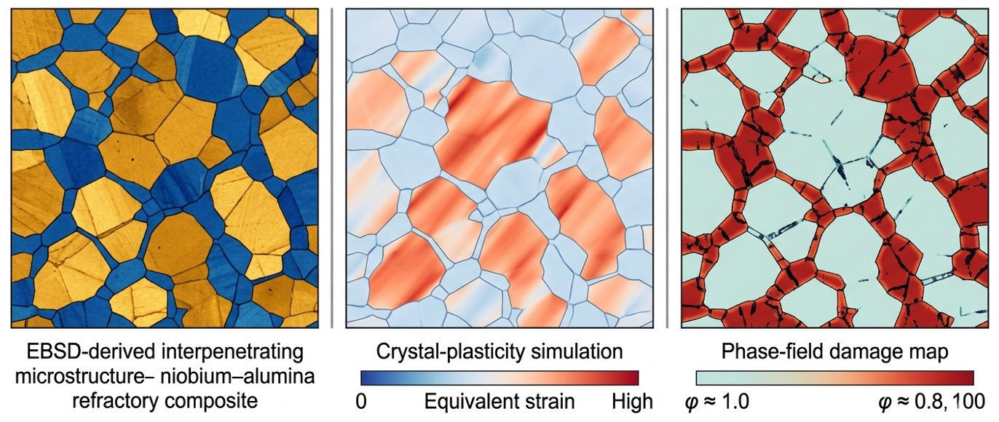

Consulting Service
Crystal Plasticity Simulation Consulting
DAMASK-based modeling of how your material actually deforms — grain by grain, phase by phase — from EBSD-based RVEs and calibration to local stress-strain results your reviewers, clients, or certification body will accept.
Who this is for
Research groups whose crystal plasticity study has to survive peer review at journals like the International Journal of Plasticity. PhD researchers whose model runs but whose calibration will not hold up to scrutiny. Industrial R&D teams who need to know why a material fails where it does, or whether a new alloy will meet spec, before committing to a processing route.
What an engagement covers
Why me

My PhD at TU Bergakademie Freiberg (magna cum laude, best thesis prize) built coupled crystal plasticity models of deformation and damage in multi-phase metals. Since then I have calibrated and validated DAMASK models against in-situ tensile testing, EBSD, and digital image correlation for TRIP steel composites and aluminum alloys, co-edited an Elsevier book on the mechanics of new-generation metals, and taught these workflows publicly in tutorials and case studies.
Most recently, our 2026 Mechanics of Materials paper on microstructure-informed modeling of LPBF AlSi10Mg components used EBSD-informed 3D RVEs and DAMASK to compare phenomenological and dislocation-density crystal plasticity formulations. The key result was not only curve matching: local stress-strain partitioning explained why build orientations respond differently, and the strength term was linked to Si-rich cellular-network spacing.
As a process engineer at TSMC, I needed a very specific understanding of how microstructural mechanisms connect to real-world material behavior. Dr. Qayyum bridged that gap between academic rigor and engineering practice in a way I hadn’t found anywhere else. — Shao-Shen Tseng, Design Engineer, TSMC, Taiwan
How it works
- 15-minute call. You describe the material, the question, and the data you have. I tell you honestly whether crystal plasticity is the right tool for it — and if it is not, what is.
- Scoped proposal. Deliverables, timeline, and cost in writing before anything starts. Focused reviews run 1–2 weeks; full setup-and-calibration campaigns typically 4–12 weeks.
- Delivery. You get the model, input files, calibration documentation, and interpreted results — everything your group needs to keep working without me.
Common questions
What do you actually deliver?
Depending on scope: a working DAMASK model with the formulation justified, a calibrated and documented parameter set, an RVE built from your EBSD data with demonstrated convergence, interpreted results, and where the goal is publication, manuscript-level methods support. You keep everything.
What do I need to provide to start?
At minimum, the material system and the question. Ideally EBSD maps, tensile data at relevant conditions, and any local measurements (DIC, in-situ). Gaps are normal — identifying which measurements are worth commissioning is usually part of the first conversation.
How long does a project take?
A focused review of an existing model or dataset: 1–2 weeks. Full model setup and calibration: typically 4–12 weeks. A complete process–structure–property study with publication-ready results: several months. Scope is agreed before the start.
Do you work with industry or only academia?
Both. Academic engagements aim at publication-grade models and manuscripts. Industrial engagements aim at decisions: will this material meet spec, why does this component fail where it does, which processing route to pursue. Same modeling standard, different deliverable.
Why DAMASK and not a commercial code?
DAMASK is open source, developed at the Max-Planck-Institut in Düsseldorf, and supports phenomenological, dislocation-density, and damage-coupled formulations on a fast spectral solver. No license costs, reproducible by reviewers, and portable across your group after I am gone.
Can you review an existing DAMASK workflow?
Yes. I can audit EBSD conversion, RVE construction, boundary conditions, calibration targets, parameter sources, convergence checks, and post-processing logic. The output is a clear list of what is publishable, what is fragile, and what must be fixed first.
Start With 15 Minutes
Book a call. We will talk through your material, your data, and your question — and I will tell you honestly how I can help, or whether you do not need me at all.
Book a 15-Minute Call Send a MessageRelated reading: DAMASK crystal plasticity documentation and real workflows · How to publish DAMASK crystal plasticity research in the International Journal of Plasticity · What sheet metal forming simulation gets right